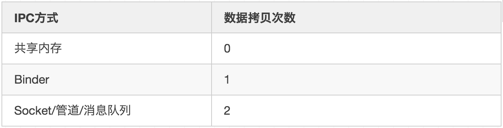
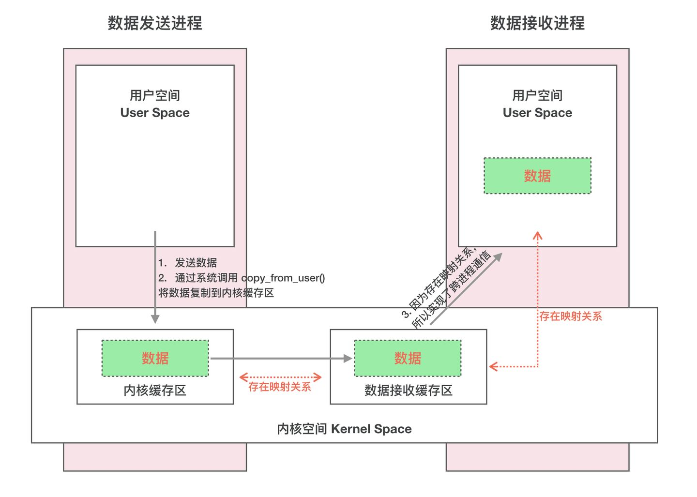
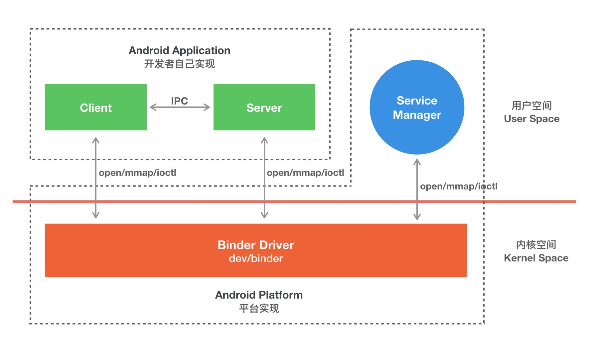
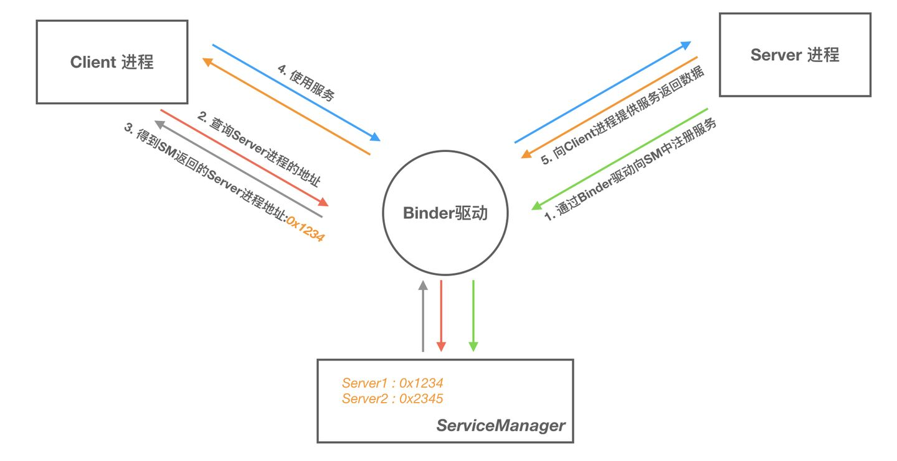
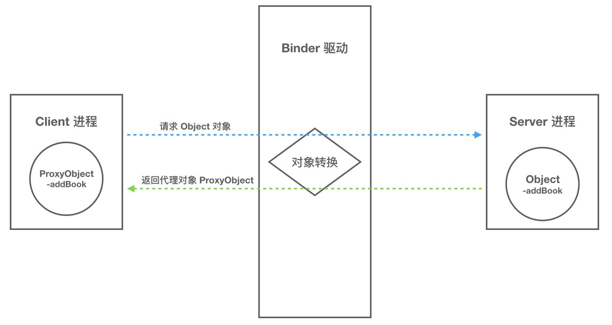

Binder机制
我们知道Android是基于Linux系统开发的。在Linux中，进程是相互独立的，一般有如下总结：
Linux的虚拟内存机制导致内存的隔离，进而导致进程隔离
进程隔离的出现导致对内存的操作被划分为用户空间和内核空间
用户空间需要跨权限去访问内核空间，必须使用系统调用去实现
系统调用需要借助内核模块/驱动去完成
Android系统可以通过添加一个内核模块运行在内核空间，用户进程之间的通过这个模块作为桥梁，就可以完成通信了。在Android系统中，这个运行在内核空间的，负责各个用户进程通过Binder通信的内核模块叫做Binder驱动。
为什么Android的IPC用的是Binder
Android 系统是基于 Linux 内核的，Linux 已经提供了管道、消息队列、共享内存和 Socket 等 IPC 机制。那为什么 Android 还要提供 Binder 来实现 IPC 呢？主要是基于性能、稳定性和安全性几方面的原因。
性能
首先说说性能上的优势。Socket 作为一款通用接口，其传输效率低，开销大，主要用在跨网络的进程间通信和本机上进程间的低速通信。消息队列和管道采用存储-转发方式，即数据先从发送方缓存区拷贝到内核开辟的缓存区中，然后再从内核缓存区拷贝到接收方缓存区，至少有两次拷贝过程。共享内存虽然无需拷贝，但控制复杂，难以使用。Binder 只需要一次数据拷贝，性能上仅次于共享内存。

稳定性
再说说稳定性，Binder 基于 C/S 架构，客户端（Client）有什么需求就丢给服务端（Server）去完成，架构清晰、职责明确又相互独立，自然稳定性更好。共享内存虽然无需拷贝，但是控制负责，难以使用。从稳定性的角度讲，Binder 机制是优于内存共享的。
安全性
另一方面就是安全性。Android 作为一个开放性的平台，市场上有各类海量的应用供用户选择安装，因此安全性对于 Android 平台而言极其重要。作为用户当然不希望我们下载的 APP 偷偷读取我的通信录，上传我的隐私数据，后台偷跑流量、消耗手机电量。传统的 IPC 没有任何安全措施，完全依赖上层协议来确保。首先传统的 IPC 接收方无法获得对方可靠的进程用户ID/进程ID（UID/PID），从而无法鉴别对方身份。Android 为每个安装好的 APP 分配了自己的 UID，故而进程的 UID 是鉴别进程身份的重要标志。传统的 IPC 只能由用户在数据包中填入 UID/PID，但这样不可靠，容易被恶意程序利用。可靠的身份标识只有由 IPC 机制在内核中添加。其次传统的 IPC 访问接入点是开放的，只要知道这些接入点的程序都可以和对端建立连接，不管怎样都无法阻止恶意程序通过猜测接收方地址获得连接。同时 Binder 既支持实名 Binder，又支持匿名 Binder，安全性高。
基于上述原因，Android 需要建立一套新的 IPC 机制来满足系统对稳定性、传输性能和安全性方面的要求，这就是 Binder。
Linux其他IPC方式
Socket
Socket，又称套接字，是Linux跨进程通信（IPC，Inter Process Communication）方式的一种。相比于其他IPC方式，Socket更牛的地方在于，它不仅仅可以做到同一台主机内跨进程通信，它还可以做到不同主机间的跨进程通信。根据通信域的不同可以划分成2种：Unix domain socket 和 Internet domain socket。
- Internet domain socket
用于实现不同主机上的进程间通信，大部分情况下我们所说的socket都是指internte domain socket。（下文不特殊指代的情况下，socket就是指internte domain socket。）
要做到不同主机跨进程通信，第一个要解决的问题就是怎么唯一标识一个进程。我们知道主机上每个进程都有一个唯一的pid，通过pid可以解决同一台主机上的跨进程通信进程的识别问题。但是如果2个进程不在一台主机上的话，pid是有可能重复的，所以在这个场景下不适用，那有什么其他的方式吗？我们知道通过主机IP可以唯一锁定主机，而通过端口可以定位到程序，而进程间通信我们还需要知道通信用的什么协议。这样一来“IP+端口+协议”的组合就可以唯一标识网络中一台主机上的一个进程。这也是生成socket的主要参数。
- Unix domain socket
用于实现同一主机上的进程间通信。socket 原本是为网络通讯设计的，但后来在 socket 的框架上发展出一种 IPC 机制，就是 UNIX domain socket。虽然网络 socket 也可用于同一台主机的进程间通讯(通过 loopback 地址 127.0.0.1)，但是 UNIX domain socket 用于 IPC 更有效率：不需要经过网络协议栈，不需要打包拆包、计算校验和、维护序号和应答等，只是将应用层数据从一个进程拷贝到另一个进程。这是因为，IPC 机制本质上是可靠的通讯，而网络协议是为不可靠的通讯设计的。
管道
- 匿名管道
匿名管道最常见的形态就是我们在shell操作中最常用的”|”。它的特点是只能在父子进程中使用，父进程在产生子进程前必须打开一个管道文件，然后fork产生子进程，这样子进程通过拷贝父进程的进程地址空间获得同一个管道文件的描述符，以达到使用同一个管道通信的目的。此时除了父子进程外，没人知道这个管道文件的描述符，所以通过这个管道中的信息无法传递给其他进程。
- 命名管道
由于基于fork机制，所以管道只能用于父进程和子进程之间，或者拥有相同祖先的两个子进程之间 (有亲缘关系的进程之间)。为了解决这一问题，Linux提供了FIFO方式连接进程。FIFO又叫做命名管道(named PIPE)。
FIFO (First in, First out)为一种特殊的文件类型，它在文件系统中有对应的路径。当一个进程以读(r)的方式打开该文件，而另一个进程以写(w)的方式打开该文件，那么内核就会在这两个进程之间建立管道，所以FIFO实际上也由内核管理，不与硬盘打交道。之所以叫FIFO，是因为管道本质上是一个先进先出的队列数据结构，最早放入的数据被最先读出来，从而保证信息交流的顺序。FIFO只是借用了文件系统(file system,命名管道是一种特殊类型的文件，因为Linux中所有事物都是文件，它在文件系统中以文件名的形式存在。)来为管道命名。写模式的进程向FIFO文件中写入，而读模式的进程从FIFO文件中读出。当删除FIFO文件时，管道连接也随之消失。FIFO的好处在于我们可以通过文件的路径来识别管道，从而让没有亲缘关系的进程之间建立连接。
共享内存(share memory)
使得多个进程可以可以直接读写同一块内存空间，是最快的可用IPC形式。是针对其他通信机制运行效率较低而设计的。
为了在多个进程间交换信息，内核专门留出了一块内存区，可以由需要访问的进程将其映射到自己的私有地址空间。进程就可以直接读写这一块内存而不需要进行数据的拷贝，从而大大提高效率。
由于多个进程共享一段内存，因此需要依靠某种同步机制（如信号量）来达到进程间的同步及互斥。
Binder 跨进程通信原理
跨进程通信是需要内核空间做支持的。传统的 IPC 机制如管道、Socket 都是内核的一部分，因此通过内核支持来实现进程间通信自然是没问题的。但是 Binder 并不是 Linux 系统内核的一部分，那怎么办呢？这就得益于 Linux 的动态内核可加载模块（Loadable Kernel Module，LKM）的机制；模块是具有独立功能的程序，它可以被单独编译，但是不能独立运行。它在运行时被链接到内核作为内核的一部分运行。这样，Android 系统就可以通过动态添加一个内核模块运行在内核空间，用户进程之间通过这个内核模块作为桥梁来实现通信。
那么在 Android 系统中用户进程之间是如何通过这个内核模块（Binder 驱动）来实现通信的呢？难道是和前面说的传统 IPC 机制一样，先将数据从发送方进程拷贝到内核缓存区，然后再将数据从内核缓存区拷贝到接收方进程，通过两次拷贝来实现吗？显然不是，否则也不会有开篇所说的 Binder 在性能方面的优势了。
这就不得不通道 Linux 下的另一个概念：内存映射。
Binder IPC 机制中涉及到的内存映射通过 mmap() 来实现，mmap() 是操作系统中一种内存映射的方法。内存映射简单的讲就是将用户空间的一块内存区域映射到内核空间。映射关系建立后，用户对这块内存区域的修改可以直接反应到内核空间；反之内核空间对这段区域的修改也能直接反应到用户空间。
内存映射能减少数据拷贝次数，实现用户空间和内核空间的高效互动。两个空间各自的修改能直接反映在映射的内存区域，从而被对方空间及时感知。也正因为如此，内存映射能够提供对进程间通信的支持。
一次完整的 Binder IPC 通信过程通常是这样：
- 首先 Binder 驱动在内核空间创建一个数据接收缓存区；
- 接着在内核空间开辟一块内核缓存区，建立内核缓存区和内核中数据接收缓存区之间的映射关系，以及内核中数据接收缓存区和接收进程用户空间地址的映射关系；
- 发送方进程通过系统调用 copyfromuser() 将数据 copy 到内核中的内核缓存区，由于内核缓存区和接收进程的用户空间存在内存映射，因此也就相当于把数据发送到了接收进程的用户空间，这样便完成了一次进程间的通信。

Binder 通信模型
一次完整的进程间通信必然至少包含两个进程，通常我们称通信的双方分别为客户端进程（Client）和服务端进程（Server），由于进程隔离机制的存在，通信双方必然需要借助 Binder 来实现。
Binder 驱动
Binder 驱动就如同路由器一样，是整个通信的核心；驱动负责进程之间 Binder 通信的建立，Binder 在进程之间的传递，Binder 引用计数管理，数据包在进程之间的传递和交互等一系列底层支持。
ServiceManager 与实名 Binder
ServiceManager 和 DNS 类似，作用是将字符形式的 Binder 名字转化成 Client 中对该 Binder 的引用，使得 Client 能够通过 Binder 的名字获得对 Binder 实体的引用。注册了名字的 Binder 叫实名 Binder，就像网站一样除了除了有 IP 地址意外还有自己的网址。Server 创建了 Binder，并为它起一个字符形式，可读易记得名字，将这个 Binder 实体连同名字一起以数据包的形式通过 Binder 驱动发送给 ServiceManager ，通知 ServiceManager 注册一个名为“张三”的 Binder，它位于某个 Server 中。驱动为这个穿越进程边界的 Binder 创建位于内核中的实体节点以及 ServiceManager 对实体的引用，将名字以及新建的引用打包传给 ServiceManager。ServiceManger 收到数据后从中取出名字和引用填入查找表。
Client 获得实名 Binder 的引用
Server 向 ServiceManager 中注册了 Binder 以后， Client 就能通过名字获得 Binder 的引用了。Client 也利用保留的 0 号引用向 ServiceManager 请求访问某个 Binder: 我申请访问名字叫张三的 Binder 引用。ServiceManager 收到这个请求后从请求数据包中取出 Binder 名称，在查找表里找到对应的条目，取出对应的 Binder 引用作为回复发送给发起请求的 Client。从面向对象的角度看，Server 中的 Binder 实体现在有两个引用：一个位于 ServiceManager 中，一个位于发起请求的 Client 中。如果接下来有更多的 Client 请求该 Binder，系统中就会有更多的引用指向该 Binder ，就像 Java 中一个对象有多个引用一样。
Client/Server/ServiceManager/驱动
前面我们介绍过，Binder 是基于 C/S 架构的。由一系列的组件组成，包括 Client、Server、ServiceManager、Binder 驱动。其中 Client、Server、Service Manager 运行在用户空间，Binder 驱动运行在内核空间。其中 Service Manager 和 Binder 驱动由系统提供，而 Client、Server 由应用程序来实现。Client、Server 和 ServiceManager 均是通过系统调用 open、mmap 和 ioctl 来访问设备文件 /dev/binder，从而实现与 Binder 驱动的交互来间接的实现跨进程通信。

Client、Server、ServiceManager、Binder 驱动这几个组件在通信过程中扮演的角色就如同互联网中服务器（Server）、客户端（Client）、DNS域名服务器（ServiceManager）以及路由器（Binder 驱动）之前的关系。
Binder 通信过程
至此，我们大致能总结出 Binder 通信过程：
首先，一个进程使用 BINDERSETCONTEXT_MGR 命令通过 Binder 驱动将自己注册成为 ServiceManager；
Server 通过驱动向 ServiceManager 中注册 Binder（Server 中的 Binder 实体），默认的表明可以对外提供服务。驱动为这个 Binder 创建位于内核中的实体节点以及 ServiceManager 对实体的引用，将名字以及新建的引用打包传给 ServiceManager，ServiceManger 将其填入查找表。
细心的读者可能会发现，ServierManager 是一个进程，Server 是另一个进程，Server 向 ServiceManager 中注册 Binder 必然涉及到进程间通信。当前实现进程间通信又要用到进程间通信，这就好像蛋可以孵出鸡的前提却是要先找只鸡下蛋！Binder 的实现比较巧妙，就是预先创造一只鸡来下蛋。ServiceManager 和其他进程同样采用 Bidner 通信，ServiceManager 是 Server 端，有自己的 Binder 实体，其他进程都是 Client，需要通过这个 Binder 的引用来实现 Binder 的注册，查询和获取。ServiceManager 提供的 Binder 比较特殊，它没有名字也不需要注册。当一个进程使用 BINDERSETCONTEXT_MGR 命令将自己注册成 ServiceManager 时 Binder 驱动会自动为它创建 Binder 实体（这就是那只预先造好的那只鸡）。其次这个 Binder 实体的引用在所有 Client 中都固定为 0 而无需通过其它手段获得。也就是说，一个 Server 想要向 ServiceManager 注册自己的 Binder 就必须通过这个 0 号引用和 ServiceManager 的 Binder 通信。类比互联网，0 号引用就好比是域名服务器的地址，你必须预先动态或者手工配置好。要注意的是，这里说的 Client 是相对于 ServiceManager 而言的，一个进程或者应用程序可能是提供服务的 Server，但对于 ServiceManager 来说它仍然是个 Client。
Client 通过名字，在 Binder 驱动的帮助下从 ServiceManager 中获取到对 Binder 实体的引用，通过这个引用就能实现和 Server 进程的通信。
我们看到整个通信过程都需要 Binder 驱动的接入。下图能更加直观的展现整个通信过程(为了进一步抽象通信过程以及呈现上的方便，下图我们忽略了 Binder 实体及其引用的概念)：

Binder 通信中的代理模式
我们已经解释清楚 Client、Server 借助 Binder 驱动完成跨进程通信的实现机制了，但是还有个问题会让我们困惑。A 进程想要 B 进程中某个对象（object）是如何实现的呢？毕竟它们分属不同的进程，A 进程 没法直接使用 B 进程中的 object。
前面我们介绍过跨进程通信的过程都有 Binder 驱动的参与，因此在数据流经 Binder 驱动的时候驱动会对数据做一层转换。当 A 进程想要获取 B 进程中的 object 时，驱动并不会真的把 object 返回给 A，而是返回了一个跟 object 看起来一模一样的代理对象 objectProxy，这个 objectProxy 具有和 object 一摸一样的方法，但是这些方法并没有 B 进程中 object 对象那些方法的能力，这些方法只需要把把请求参数交给驱动即可。对于 A 进程来说和直接调用 object 中的方法是一样的。
当 Binder 驱动接收到 A 进程的消息后，发现这是个 objectProxy 就去查询自己维护的表单，一查发现这是 B 进程 object 的代理对象。于是就会去通知 B 进程调用 object 的方法，并要求 B 进程把返回结果发给自己。当驱动拿到 B 进程的返回结果后就会转发给 A 进程，一次通信就完成了。

Binder 的完整定义
现在我们可以对 Binder 做个更加全面的定义了：
- 从进程间通信的角度看，Binder 是一种进程间通信的机制；
- 从 Server 进程的角度看，Binder 指的是 Server 中的 Binder 实体对象；
- 从 Client 进程的角度看，Binder 指的是对 Binder 代理对象，是 Binder 实体对象的一个远程代理
- 从传输过程的角度看，Binder 是一个可以跨进程传输的对象；Binder 驱动会对这个跨越进程边界的对象对一点点特殊处理，自动完成代理对象和本地对象之间的转换。